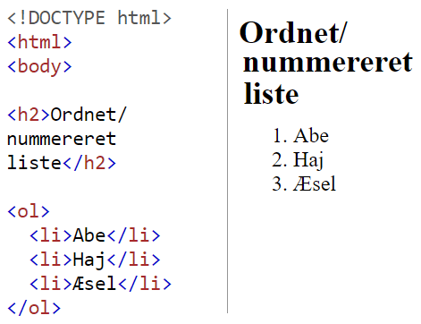

Grundlæggende HTML
HTML er en forkortelse for Hyper Text Markup Language og er det grundlæggende sprog der bruges til at lave indhold på hjemmesider i form af tekst. HTML filer er almindelige tekstfiler som kan redigeres og ændres i med hvilken som helst tekstredigeringsprogram også kaldet en editor.
Tags
HTML benytter sig af tegnene < og > kaldet tags, til at definere og placere tekst og billeder.
Tag elementer bruges til at specificere om der er en paragraf, en overskrift eller header man laver.
Tag eksempel / begreb.
Det første tag er et start tag, og det sidste tag er et slut tag.
Slut tags defineres med en skråstreg. Det er vigtigt at lukke et tagget for at det ikke kommer til at påvirke andre elementer i sin kode. Hvis tagget ikke bliver lukket vil al anden tekst også skrives med kursiv.
Semantiske tags
Det tags som definerer deres indhold, tags som footer, header eller nav, fortæller hvad de indeholder.
Det er vigtigt at implementere semantiske tags på ens hjemmeside for at gøre den mere SEO venlig. Hvorimod ikke definerede tags som < div > og < span > hvor indholdet ikke er defineret.
Indrykning
Det er en god idé at lave indrykninger i ens kode, for at gøre den mere læsevenlig og generelt skabe overblik ved at kunne se hvor et tag bliver startet og hvor det slutter. For at lave indryk bruges tabulatorknappen frem for mellemrum.
Begreber
Et tag har altid en åbning < > og en lukning < / >. Imellem åbningen og lukningen af et tag har man en attribut som har et navn, som har en effekt. Imellem åbnings tagget og luknings tagget.
Tekstafsnit
Når man skal lave tekstafsnit i HTML skal de angives med et paragraf start tag < p > og et paragraf < / p > slut tag.
Inddeling eller division < div > tag bruges til at inddele et område.
Område eller < span > tagget angiver hvor meget < span > eller vidde et element dækker over. Tagget er ikke semantisk.
Sektioner eller sections angives med < section > og afsluttes med < / section >. Section tagget bruges til at fortæller hvilke elementer der hører sammen. < section > tagget er semantisk..
Opbygning af HTML element ↓.
Lister


Hypertekst
Hypertekst er tekst som indeholder links
Hvad er links?
Et link består af et anchor tag < a + en href attribut > start og slut, det indhold som er angivet imellem start og slut tagget bliver nu linkbart.
Link typer
Relative vs. absolut adressering
Her er der tale om at linke til filer som....
Billede links
Når man skal indsætte et billede på en hjemmeside, gøres det via tagget.
tagget skal indeholde src= attributten. Eksempel:
< img src="billedsti.png" >
Det er vigtigt at indsætte en ”alt” attribut efter billedstien for som en form for backup, hvis billedstien ikke kan vises. Alt attributten er alternativ tekst som vil blive vist i stedet for billedet.
< alt > attributten skal ikke lukkes.
Hvis man ønsker at give ens indsatte billede en højre eller bredde, kan dette gøres ved at bruge height eller width attributterne. Disse attributter angiver størrelser i pixels. Eksempel:
< img src="dog.gif" alt="Happy Dog" height="55" width="55">
En god idé er at bruge .png eller .gif fil formater til webbrug da de fylder minde end traditionelle .jpg filer, hvilket gør det hurtigere for brugeren at loade siden.
Brugte kilder:
Intro til HTML pdf af Niles Østergaard